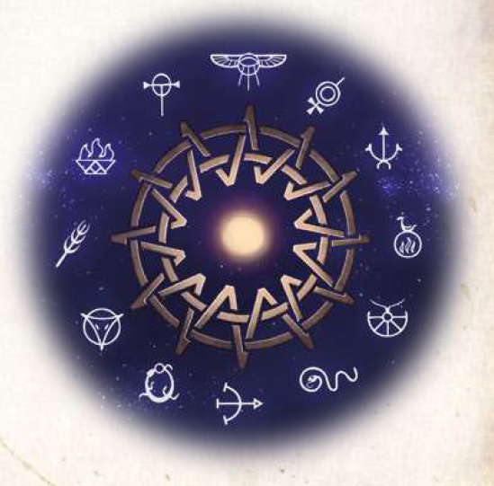

Im Jahr 98 v.BF legte Kaiser Silem-Horas fest, welches fürderhin die einzig wahren Götter in seinem weltumspannenden Reich sein sollten. Durch das sogenannte Silem-Horas-Edikt beendete er lange Konlikte zwischen den zahlreichen konkurrierenden Kirchen. Dabei nahm er durchaus auch Kulte auf, die zu seiner Zeit als verpönt galten. So entstand das untrennbare Pantheon der Zwölfgötter und ihrer Kinder, alle anderen zuvor angebeteten Götter wurden hingegen als Götzen verdammt. Auch vormals recht populären Kulten versetzte das Verbot den Todesstoß, denn ihre Priester konnten nur noch im Verborgenen ihre Riten vollziehen. Dass das Edikt Götter der güldenländischen Einwanderer und Gottheiten der aventurischen Ureinwohner zusammenfasst, ist jedoch ein Umstand, der nur den wenigsten aventurischen Gelehrten bekannt ist.
Besonders prägend ist daher auch die Gesamtheit der Verehrung. Ein Zwölfgöttergläubiger glaubt niemals nur an einzelne der Zwölfgötter, sondern immer an das gesamte Pantheon.